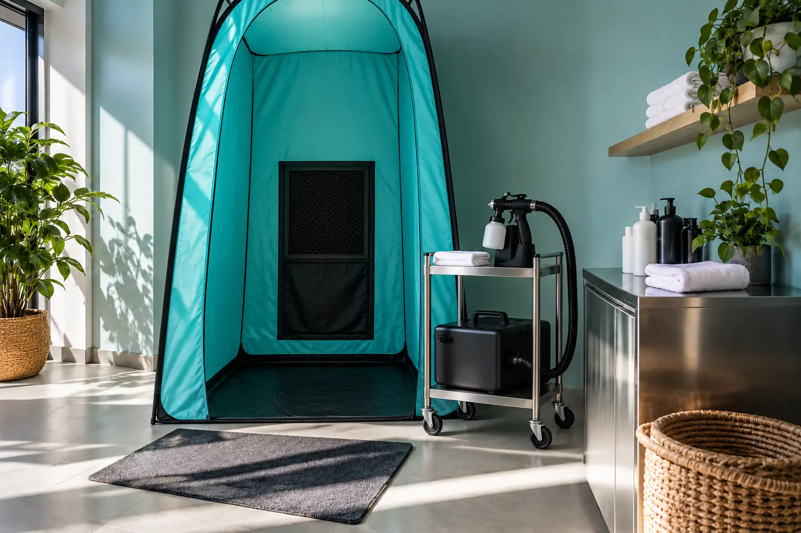

Purškiamas įdegis ir soliariumas: skirtingi metodai ir sveikatos ribos
Autorius: Madbeauty redakcija · Numatyta 2026 m. lapkričio 4 d. 16:00 (Lietuvos laiku)
Purškiamas įdegis suteikia kosmetinę spalvą be dirbtinio UV šaltinio, o soliariumas veikia UV spinduliais. Palyginame paslaugos apimtį ir sveikatos ribas.

Purškiamas įdegis ir soliariumas gali suteikti panašų vizualinį įspūdį, tačiau veikia skirtingai: purškiama kosmetikos priemonė suteikia spalvą be dirbtinio UV šaltinio, o soliariume įdegio siekiama ultravioletine spinduliuote. Renkantis svarbu palyginti ne vien paslaugos pavadinimą, bet ir poveikio būdą, paslaugos apimtį bei jos ribas.
Kosmetinė spalva ir UV poveikis
Daugelyje savaiminio įdegio priemonių naudojamas DHA: JAV Maisto ir vaistų administracija (FDA) paaiškina, kad ši medžiaga suteikia spalvą reaguodama su odos paviršiaus aminorūgštimis. Tai kosmetinė spalva, o ne UV įdegis. FDA informacija apie savaiminio įdegio priemones taip pat nurodo, kad vien spalva nereiškia apsaugos nuo saulės: ją gali suteikti tik atitinkamai paženklintas produktas su apsaugos nuo saulės sudedamosiomis dalimis.
Soliariume naudojama dirbtinė ultravioletinė spinduliuotė. Taigi palyginimo pagrindas paprastas: ar siekiate kosmetinės spalvos, ar renkatės UV poveikį. Abu būdai gali atrodyti kaip „įdegis“, bet tai nėra tas pats procesas.
Paslaugos eiga ir apimtis
Paslaugos pavadinimas nepasako, kas tiksliai įskaičiuota, kiek laiko tai truks ar kokia bus kaina. Lygindami konkrečius pasiūlymus, patikrinkite:
- Purškiamo įdegio atveju – kokios kūno sritys įtrauktos, kokio produkto sistema naudojama ir kokios konkrečios jos instrukcijos prieš bei po vizito.
- Purškiant ar naudojant dulksną – kaip saugomos akys, lūpos ir gleivinės ir kaip išvengiama priemonės įkvėpimo. FDA šias ekspozicijas aptaria savo JAV šaltinyje; tai nėra Lietuvos teisės išaiškinimas.
- Soliariumo atveju – kokia konkreti paslaugos trukmė ir kaina, ar pateikiama naudojimo informacija, ar prižiūrima įranga ir po kiekvieno lankytojo valomi bei dezinfekuojami gultai ir apsauginiai akiniai.
Purškiamas įdegis: kosmetinės spalvos pasirinkimas
Jei pagrindinis tikslas yra pakeisti odos išvaizdą ir norite išvengti dirbtinio UV šaltinio, purškiamą įdegį galima svarstyti kaip kosmetinės spalvos variantą. Tačiau konkretų rezultatą, naudojimo instrukciją ir apsaugos priemones lemia naudojamas produktas bei paslaugos atlikimo būdas. Vien paslaugos pavadinimo tam įvertinti nepakanka.
Pavyzdys: jei žmogus ruošiasi renginiui ir nenori UV poveikio, jam aktualu pirmiausia palyginti, kokia purškiamo įdegio paslauga siūloma, kokios sritys įtrauktos ir kaip užtikrinama akių bei gleivinių apsauga. Iš šio pavyzdžio negalima spręsti apie konkretų atspalvį, jo išsilaikymą ar individualų tinkamumą.
Soliariumas: UV poveikis ir jo ribos
Nacionalinis visuomenės sveikatos centras (NVSC) primena, kad nesaikingas deginimasis soliariume gali sukelti nudegimų, pažeisti akis, skatinti ankstyvą odos senėjimą ir didinti odos vėžio riziką. NVSC 2026 m. vasario 5 d. atnaujintame priminime taip pat nurodo, kad Lietuvoje soliariumo paslaugos leidžiamos tik nuo 18 metų. Skaityti NVSC priminimą apie soliariumų saugą.
UV poveikio negalima laikyti vien kosmetine paslauga. NVSC ragina įvertinti odos tipą, vartojamus vaistus ir kitas individualias aplinkybes; dėl jų verta pasitarti su šeimos gydytoju ar dermatologu. Šis gidas nenustato universalaus saugaus seansų grafiko.
Sveikatos ir įrodymų ribos
FDA šaltinis paaiškina kosmetinių priemonių ir purškimo ekspozicijų klausimus pagal JAV reguliavimo kontekstą, todėl jo negalima laikyti Lietuvos teisės aprašymu. NVSC šaltinis aprašo Lietuvos soliariumų reikalavimus ir rizikas. Abu šaltiniai padeda atskirti kosmetinės spalvos tikslą nuo UV poveikio, tačiau neįrodo, kad kuri nors konkreti paslauga ar produktas tiks kiekvienam žmogui.
Jei lyginate pasiūlymus, patikrinkite jų konkrečią apimtį, naudojamo produkto informaciją ir saugos priemones. Jei svarstote soliariumą, atsižvelkite į NVSC pateiktas rekomendacijas ir savo sveikatos aplinkybes. Kosmetinė spalva savaime nėra apsauga nuo saulės, o UV poveikis išlieka atskira sveikatos rizika.
Procedūrų aprašai kataloge: Purškiamas įdegis, Soliariumas. Miestą ir realaus teikėjo pasiūlymą pasirinkite kataloge, kai tokia pasiūla pateikta.
Susiję gidai
Šaltiniai
- FDA · purškiamas įdegis ir bronzantai · www.fda.gov
- NVSC · soliariumo sauga 2026 · nvsc.lrv.lt